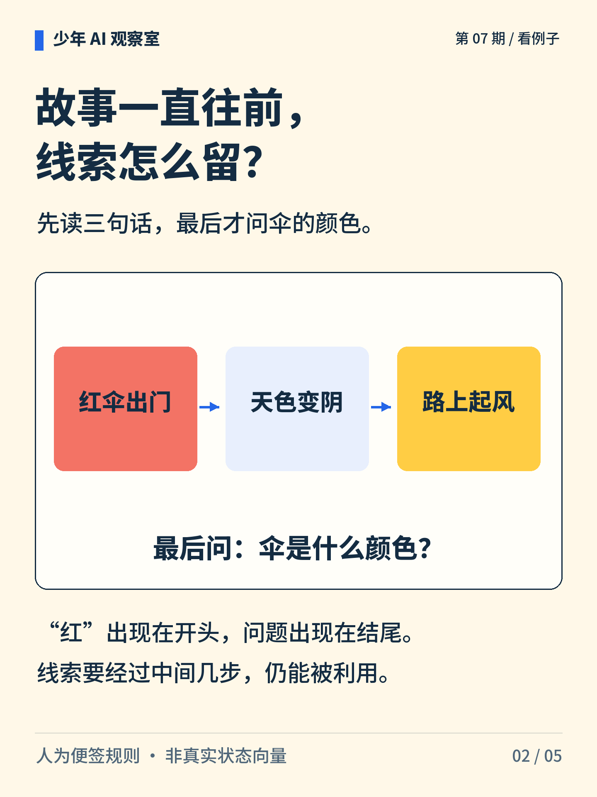
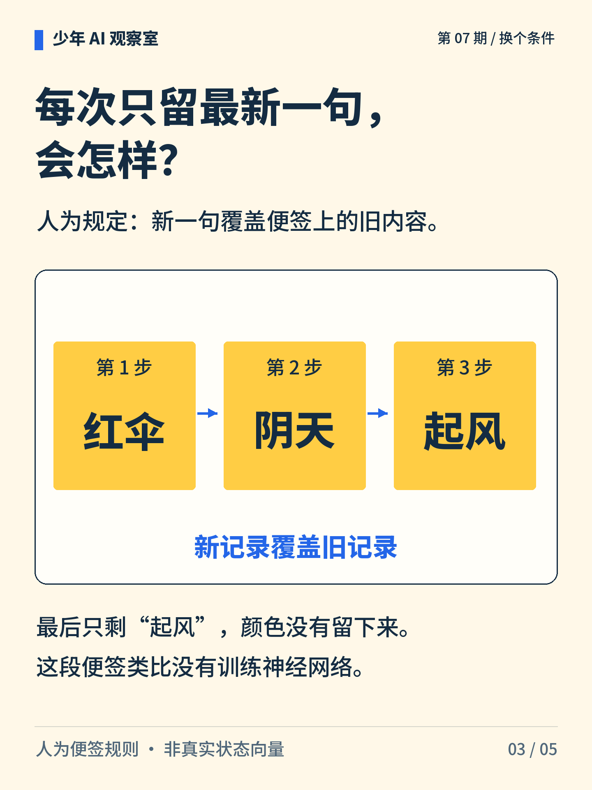
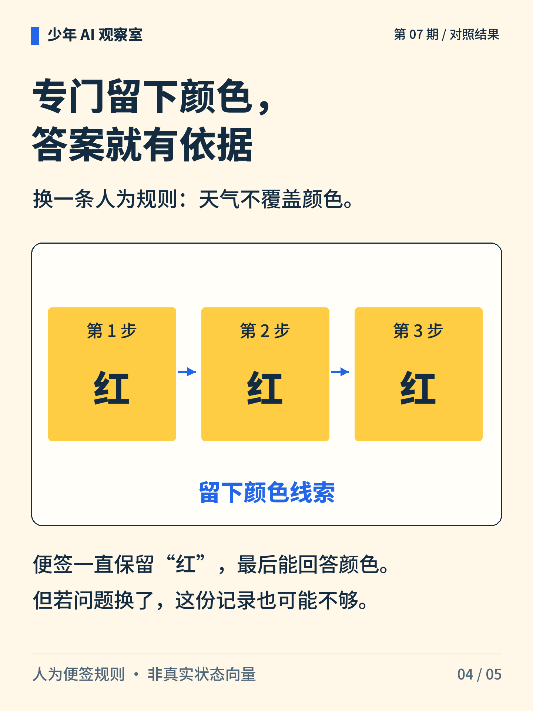
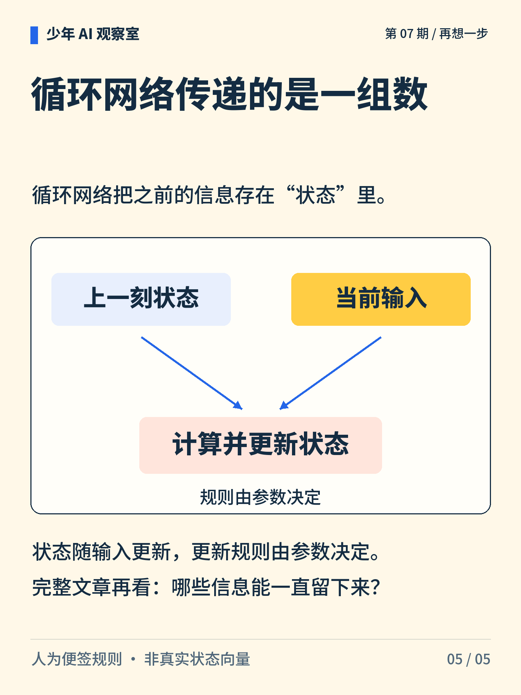

少年 AI 观察室 · 第 07 期
故事讲完了，红伞还记得吗？
红伞出门、天色转阴、路上起风。读下一句时，只能看到当前句和一张便签。怎样把颜色带到结尾？
图解文字
红伞和依次传递的便签，提示故事推进时怎样留下开头的信息。

图解文字
依次读“红伞出门、天色变阴、路上起风”，最后问伞的颜色。

图解文字
若每次都覆盖成最新内容，三步便签依次为红伞、阴天、起风，颜色线索丢失。

图解文字
若规则专门保留颜色，三步都留下“红”。能答颜色，但未必能答天气。

图解文字
循环网络用上一刻状态和当前输入计算新状态，更新规则由参数决定。
想一想
如果最后改问“有没有风”，只保留一个“红”字够吗？
展开参考思路
不够。“红”只支持回答颜色，不能说明后来有没有风。若要兼顾两个问题，记录中还需要保留风的信息。这张人为便签说明保留内容与任务有关，不是对真实网络记忆能力的测量。
能否利用前面的线索，取决于状态里保留了什么。
便签更新规则由人指定。循环网络通常用一组数作为状态，不能把这些数逐项理解为便签上的汉字。
正文首图为 AI 辅助生成的概念插画；第 2—5 张图按核对过的文字与规则绘制。
延伸阅读资料
文中算例与图解用于说明原理，不是实际模型的测评结果。研究结论对应以下资料。〔1〕 PyTorch，RNN（官方文档；访问日期：2026-10-05）。
https://docs.pytorch.org/docs/stable/generated/torch.nn.RNN.html
〔2〕 PyTorch，LSTM（官方文档；访问日期：2026-10-05）。
https://docs.pytorch.org/docs/stable/generated/torch.nn.LSTM.html
〔3〕 Gers、Schmidhuber、Cummins，2000，Learning to Forget: Continual Prediction with LSTM，Neural Computation 12(10):2451–2471。DOI:10.1162/089976600300015015。
https://doi.org/10.1162/089976600300015015
书目信息沿用原稿，本轮未重新核验外部网页的可访问性。